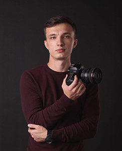

|  | Address: 49080, Dnipro, Donetske shose str, 15 | |||
| Phone: +380630000000 | ||||
| E-mail: alxmat94@gmail.com | ||||
| Birth date: 20.05.1994 | ||||
| Marital status: not married | ||||
| Social media profiles: | ||||
Oles Honchar Dnipropetrovsk National University, bachelor in radio engineering, a technical specialist in the electronics industry and telecommunications (specialty «Radiotechnics», average score: 4,74).
Military Department of National Mining University, junior lieutenant in reserve (specialty «Maintenance and repair artillery armaments»)
Oles Honchar Dnipropetrovsk National University, telecommunications and radio engineering specialist (specialty «Radio communication, broadcasting and television equipment»).
Community-manager. Company I Coworking Hub. Occupation: location administration, clients communication/negotiations, team supervision.
Photographer. Freelance. Genres: reportage, individual photoshots, content, portrait photo, advertising.
Engineer of 1 category. Yuzhnoe SDO. Group of command-telemetric radio lines and spacecraft control in flight. I am engaged in the development of initial data, sections of draft designs in terms of onboard equipment for spacecraft communication systems, issuing technical reports and other documentation on communication systems.
English (Pre-Intermediate)
Basic software knowledge:
Critical thinking, great involvement in new projects, the ability to find a common language with people.
Photography, html & CSS programming
, marketing.